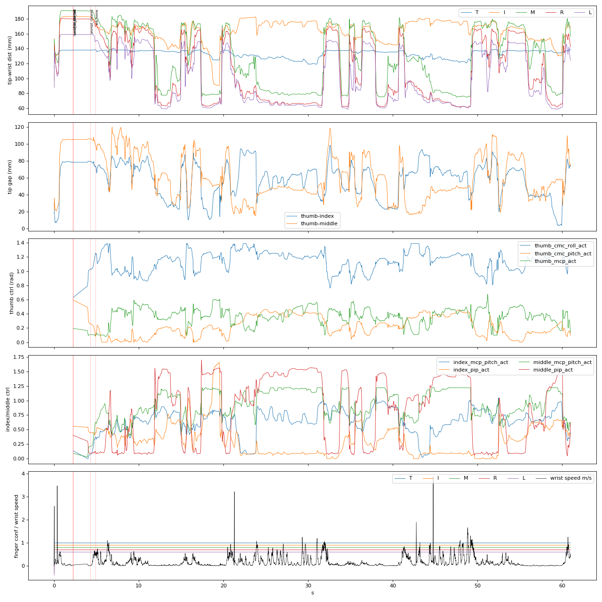
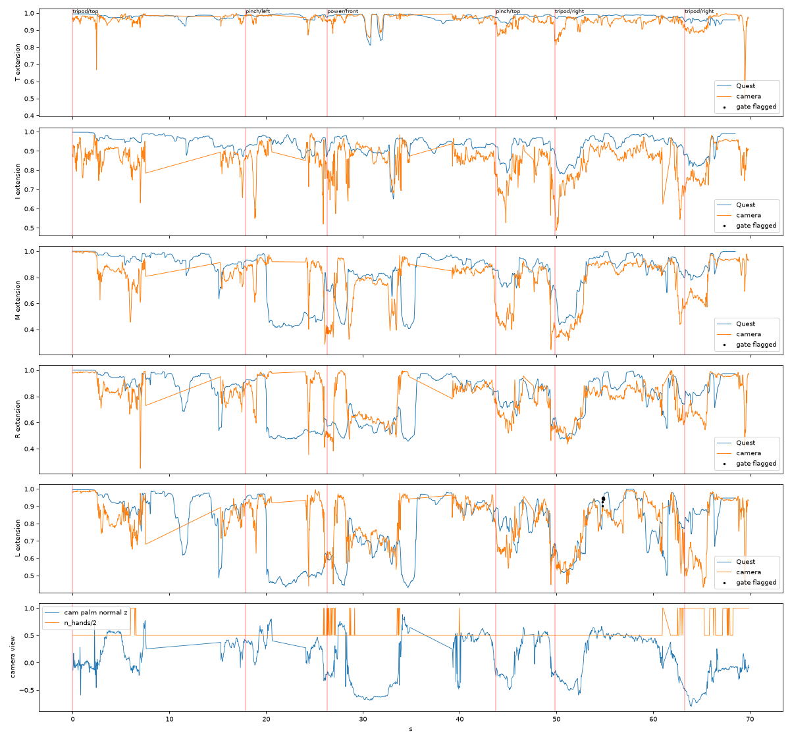
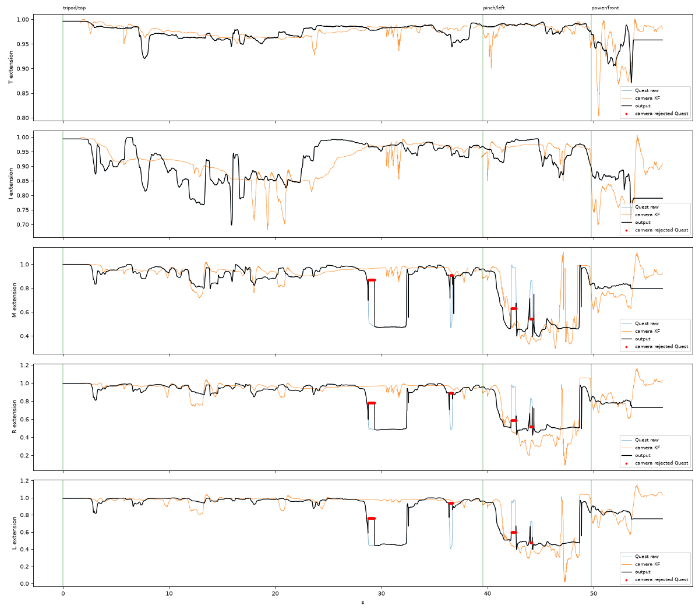

collection v2（计划页 v3）的正式采集在 2026-09-16 傍晚被同一个问题两次打断：做 tripod 时机器人手指来回跳。这一页记录接下来四天对采集输入侧的测量与修正——每个数字都来自 human_machine_interaction · hand_control/data/quest_sessions/ 里的原始 session，协议改动记为计划页 v4。95 条 pinch 的训练结果仍在 Stage 1.2 结果页；本页不含任何模型数字。
| 版本 | 日期 | 变了什么 | 原因／证据 | 结果／记录 | 截图／视频 |
|---|---|---|---|---|---|
| v4 | 2026-09-16 → 09-20 | v3 协议不变，采集输入侧加两级：每指速度门控（--finger-gate on）；Mac 相机 + MediaPipe 的仲裁（--cam-udp，伸展比 Kalman，按视角选 3-D／2-D 线索）。网页控制台一键启动采集／相机／APK。target_ctrl（Stage 1.2 的模型输入）自此是门控后的命令，source 行保持原始。 | Quest 在遮挡的卷曲手指上整块切换假设，每指 3–24 次/min，置信位全程为高（§1） | §2 门控 ~40% 翻转不到机器人；§3 相机仲裁；§4 09-20 在环 session 的失败与修正 | 翻转图 · 配对图 · 在环图 |
操作者感受是"tripod 时手势来回抽搐"。在 source 行（腕坐标 21 点，90 Hz）里它长这样：被手掌挡住的卷曲手指——中指、无名指、小指——在一帧内从完全卷曲（指尖离腕 ≈65 mm）跳到完全伸直（≈175 mm）再跳回，手腕几乎不动（<0.1 m/s）。单帧指尖步长中位数 28 mm／11 ms（2.5 m/s），最大 110 mm；同批数据里真实指尖速度 p99.9 = 1.2 m/s、最大 1.8 m/s。三根手指整块一起翻——追踪器的先验把它们绑在一起，所以 tripod 需要的"中指半屈、无名/小指卷曲"这个状态它根本不输出。

| 测量（2026-09-13 → 09-16，44 min 有效追踪） | 数值 | 含义 |
|---|---|---|
| 手指跳变率（>1.5 m/s，每指） | pinch 17–24／min，tripod 4–9／min，power ~17／min | pinch 更高（三指卷曲被挡）；tripod 感觉更糟是因为中指承重 |
| 翻转后回到原状态的时间 | ≤100 ms 33%，≤300 ms ~50%，其余 0.5–2 s 或不回 | 定时类滤波最多去掉一半 |
| Quest 每指置信位为高的帧 | 99–100%，翻转期间不变 | 已有的 --finger-confidence hold 看不见它 |
| 掌法向·(头→手) 与跳变率 | −1..−0.75 区 44/min → +0.25..+0.5 区 9/min | 几何遮挡是主因；接近方向 front/left/right/top 无差别 |
| 被猜的手指是否"冻结" | 否（0.3 s 窗内 <0.5 mm 的帧 0%） | "静止=猜测"不能用作判据 |
代码 human_machine_interaction · hand_control/services/level_2_landmark_filters/finger_jump_gate.py，8 项单元检查。每指、在腕坐标 landmark 上：帧间位移 ≤ 1.5 m/s·dt（静止手指另加匀速预测偏差 ≤ 80 m/s²·dt²）→ 连续、零延迟直通；否则 hold 上一被接受姿态，跳变持续 150 ms 后接受，接受后以 1.5 m/s slew 而非瞬移；流中断 >0.1 s 重置。
| 离线回放（10 个 session，44.8 min） | speed 1.5 + acc 80，confirm 150 ms（默认） | confirm 250 ms | speed 0.8 |
|---|---|---|---|
| 跳变起点／min | 8.6 | 8.5 | 19.7 |
| 在 hold 内自己弹回（完全不到机器人） | 39% | 52% | 28% |
| 被 hold 的帧 | 2.0% | 2.8% | 4.2% |
| hold 时长 p50／p95 | 158／~300 ms | 256／~2400 ms | 170／~1700 ms |
它能做的：瞬移变成有界慢滑，约四成翻转消失。它不能做的：判定持续超过 confirm 的错误状态——流里没有信号。09-17 第一次开门控的 session（113607Z，tripod 31 次/min）证实：90% 的翻转是持续型，门控只 hold 了 1–2% 的帧。
头显摄像头抓取时永远看手背；第二台从前下方看的相机（MacBook 自带，1280×720 30 fps，MediaPipe 0.10.21，独立 conda 环境 mp_cam——mediapipe 要求 numpy<2，不允许进采集环境）能看到卷曲。相机服务 hand_control/demo/cam_hand_stream.py：标签只用来首次锁定右手（MediaPipe 的左右标签有 17% 的帧翻转），之后按手腕位置逐帧跟踪；UDP 发给采集端，记为 cam_source 原始行。

| 配对分析（115223Z） | 数值 | 结论 |
|---|---|---|
| 相机拍摄→采集端延迟；两路时钟偏差 | 25 ms（p95 34）；≈ −10 ms | 同一台 Mac 的单调时钟，不需要跨设备对时 |
| 手性（Umeyama 全 21 点残差，原样 vs x 取反） | 26 mm vs 63 mm | 不镜像 |
| MediaPipe 近节指骨长度 vs Quest | 22 mm vs 38 mm，且同 session 内在 10–30 mm 漂 | landmark 级融合不成立：它的 3-D 手不是刚体骨架 |
| 伸展比一致性（卷 <0.65／伸 >0.8 同侧判定，M/R/L） | 掌心朝相机：3-D 71–78%、2-D 34–75%；手背/侧面：2-D 85–92%、3-D 49–85% | 线索要按视角选（§4） |
仲裁器 level_2_landmark_filters/camera_arbiter.py（13 项检查）：每指一个常速度 Kalman 滤相机的伸展比（野值门 4σ、连续 3 帧野值即真实阶跃重启、对 Quest 的偏差取滑动中位数校正）。相机只在 Quest 发生跳变时投票（门控的 jump，或 150 ms 内伸展比变化 ≥0.2）：相机站在跳变前一侧 → 新状态被否决、hold 旧姿态，直到 Quest 回来／相机转而同意／0.6 s 上限；相机站在跳变一侧 → 门控正在 hold 的跳变立刻放行；相机不新鲜（>0.25 s）或看不见 → 只剩门控。离线回放 115223Z：9 次否决，两次明确的 Quest 翻转（中指 26–29 s、34–35 s）被压住；一次真实卷曲（20.0 s）因相机恰好丢手被延迟 0.9 s——上限由此设定。

在环时的现象：比之前更抽、更不跟手。原始记录：相机 99% 帧新鲜、右手 98%、延迟 24 ms，但仲裁对 M/R/L 各否决了 ~315 帧（四段、每段最长 1 s）——否决的是操作者真实的卷曲。原因：整段顶抓里 Mac 相机看到的是手背/侧面（MediaPipe 掌法向 z 在 0..+0.5），此时 MediaPipe 的 3-D 提升和 Quest 一样在猜"伸直"。量化：手背朝相机时 M/R/L 分歧 0.37，掌心朝相机 0.05。
未定：28.8–32.5 s 那段 Quest 报"卷曲"3.5 s、相机 2-D 报"伸直"（图像中指长 2.4 个掌宽）——两路只能二选一，本页按图像证据视为 Quest 翻转；0.6 s 后它仍会通过。
操作者反馈"手指绷直，L20 仍弯"。115223Z 里人手指完全伸直（伸展比 >0.97）时的命令：食指 mcp_pitch 44°、中指 43°、无名 26°+pip 23°、小指 22°+pip 16°。实现并回放了 --target-mode skeleton_all（四指都用机器人骨长、沿人手骨方向）：MCP 41°→41°（食）、42°→40°（中）、23°→30°（无名）、19°→20°（小）；无名 PIP 23°→17°；捏合间隙 16.8→15.5 mm（拇-食）、17.3→15.3（拇-中）。几乎不变，因为人手指 PIP/DIP 绷直时 MCP 本身相对手掌轴弯着 50–70°（抓取准备的拱手），命令 41–45° 比人还少；真正平放（hold-flat 校准，1st percentile）读 6–13°、命令 5–27°。L20 是忠实复制掌指关节。默认保持 skeleton_abd；要更直只能做有意的保真取舍。
hand_control/demo/demo_console.py，console_service.sh start 常驻本次登录、不开机自启）：启动/停止采集（与终端同一 sh 脚本，Ctrl+C 语义）、门控与相机勾选、`z` 重置、构建+安装 APK、状态栏"头显（USB）→ 遥操作"、相机在线/右手率/延迟/仲裁计数。发现并修了 launchd PATH 缺 /usr/sbin（mujoco 导入调 sysctl）与一处持锁记日志的死锁。hand_control/demo/finger_flip_report.py：任一 session 的跳变统计与 raw/gated 叠图。hand_control/plan/2026-09-16-finger-flip-gate.md（本页数据来源）；hand_control/plan/2026-09-20-adaptive-retargeting-research.md（角度映射 vs 向量 IK、学习型/在线自适应重定向文献、因果手指先验设计与两周排序）。command.finger_gate 已有逐帧记录）；09-16 傍晚前的数据未门控，task_config.finger_gate 说明每个 session 是哪一种，不得混用。hand_control/data/quest_sessions/）| session | 协议／输入 | 用途与结果 |
|---|---|---|
| 20260916T154841Z、155937Z | v3，未门控 | 正式 session 1 两次尝试，均在 trial 1（tripod/top）停止；155937Z 前 60 s 是 §1 的翻转图 |
| 20260917T113607Z | v4 门控 on | tripod 31 跳变/min，90% 持续型；门控 hold 1–2% 帧 |
| 20260918T114841Z、115223Z | v4 门控 + 相机记录（无仲裁） | 配对分析 §3；115223Z 为仲裁器离线设计集 |
| 20260920T115437Z | v4 门控 + 相机仲裁 v1 | §4：相机看手背时否决真实卷曲；修正后回放 0 误否决 |